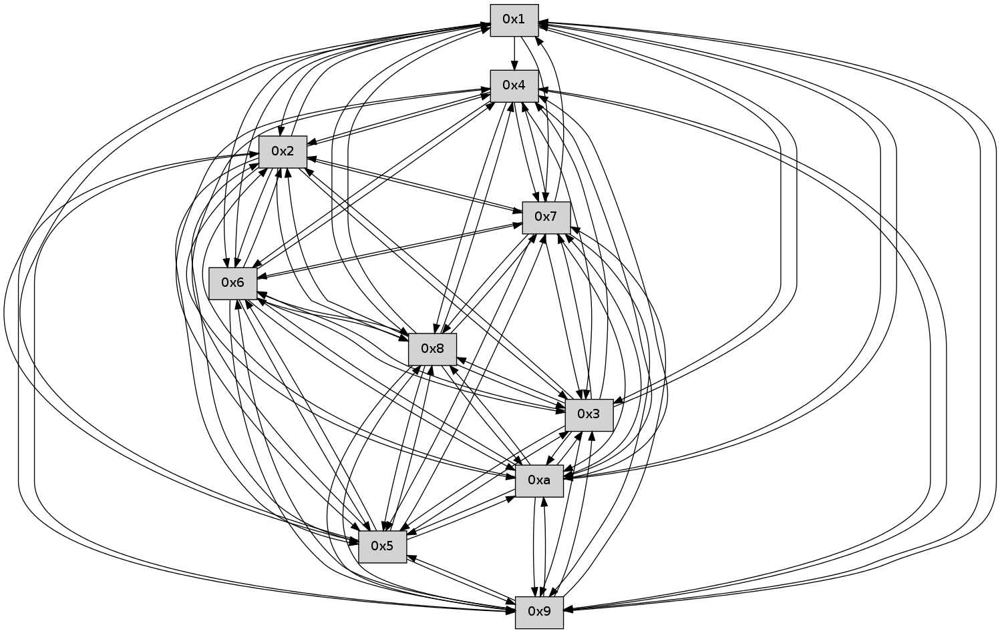

>> << IDX [start] -100 -25 -5 +0 +5 +25 +100 [230.562529087]
 Previous packets
225.065591 beacon03(faad) #0 coord=01,02,03,04,05,06,07,0a,09,08 cycle=688.0ms assoc 64 40 15
225.115596 beacon0a(faad) #0 coord=01,02,03,04,05,06,07,0a,09,08 cycle=688.0ms assoc 64 c8 23
225.146513 [Hello(6): seq=148 sym=2,3,5,4,7,9,8,10,1 sysInfo= stat=2:11,0,0,0/3:6,0,0,0/5:0,0,0,0/4:14,0,0,0/7:10,0,0,0/9:15,0,0,0/8:15,0,0,0/10:12,0,0,0/1:11,0,0,0]
225.149493 [Hello(7): seq=148 sym=2,3,5,6,4,8,9,10,1 sysInfo= stat=2:6,0,0,0/3:6,0,0,0/5:3,0,0,0/6:6,0,0,0/4:9,0,0,0/8:12,0,0,0/9:12,0,0,0/10:5,0,0,0/1:14,0,0,0]
225.157958 [Hello(9): seq=91 sym=5,2,3,4,7,6,8,10,1 sysInfo= stat=5:13,0,0,0/2:14,0,0,0/3:3,0,0,0/4:8,0,0,0/7:1,0,0,0/6:10,0,0,0/8:9,0,0,0/10:5,0,0,0/1:11,0,0,0]
225.165136 [Hello(8): seq=91 sym=5,2,3,4,7,6,9,10,1 sysInfo= stat=5:7,0,0,0/2:6,0,0,0/3:10,0,0,0/4:13,0,0,0/7:2,0,0,0/6:6,0,0,0/9:8,0,0,0/10:2,0,0,0/1:15,0,0,0]
225.168268 [Hello(10): seq=80 sym=6,3,2,5,9,8,7,4,1 sysInfo= stat=6:14,0,0,0/3:6,0,0,0/2:8,0,0,0/5:10,0,0,0/9:13,0,0,0/8:13,0,0,0/7:14,0,0,0/4:5,0,0,0/1:2,0,0,0]
----------------------------------------------------------------------
225.833739 beacon01(faad) #0 coord=01,02,03,04,05,06,07,0a,09,08 cycle=688.0ms assoc
-- color-indic=0 64 bd 07
225.843722 beacon02(faad) #0 coord=01,02,03,04,05,06,07,0a,09,08 cycle=688.0ms assoc 64 2e 36
225.853721 beacon03(faad) #0 coord=01,02,03,04,05,06,07,0a,09,08 cycle=688.0ms assoc 64 54 7b
225.863723 beacon04(faad) #0 coord=01,02,03,04,05,06,07,0a,09,08 cycle=688.0ms assoc 64 23 91
225.873723 beacon05(faad) #0 coord=01,02,03,04,05,06,07,0a,09,08 cycle=688.0ms assoc 64 59 dc
225.883722 beacon06(faad) #0 coord=01,02,03,04,05,06,07,0a,09,08 cycle=688.0ms assoc 64 d7 0b
225.893723 beacon07(faad) #0 coord=01,02,03,04,05,06,07,0a,09,08 cycle=688.0ms assoc 64 ad 46
225.903727 beacon0a(faad) #0 coord=01,02,03,04,05,06,07,0a,09,08 cycle=688.0ms assoc 64 dc 4d
225.913727 beacon09(faad) #0 coord=01,02,03,04,05,06,07,0a,09,08 cycle=688.0ms assoc 64 52 9a
225.923728 beacon08(faad) #0 coord=01,02,03,04,05,06,07,0a,09,08 cycle=688.0ms assoc 64 28 d7
225.934594 [Hello(1): seq=57 sym=4,2,9,5,10,3,8,6,7 sysInfo= stat=4:12,0,0,0/2:1,0,0,0/9:12,0,0,0/5:0,0,0,0/10:8,0,0,0/3:13,0,0,0/8:11,0,0,0/6:1,0,0,0/7:1,0,0,0]
225.937118 [Hello(5): seq=149 sym=7,6,4,2,3,9,8,10,1 sysInfo= stat=7:5,0,0,0/6:3,0,0,0/4:12,0,0,0/2:9,0,0,0/3:4,0,0,0/9:13,0,0,0/8:7,0,0,0/10:15,0,0,0/1:5,0,0,0]
225.939774 [Hello(4): seq=149 sym=5,7,6,2,3,9,8,10 sysInfo= stat=5:15,0,0,0/7:11,0,0,0/6:13,0,0,0/2:3,0,0,0/3:15,0,0,0/9:14,0,0,0/8:2,0,0,0/10:0,0,0,0]
225.944441 [Hello(3): seq=149 sym=5,7,6,4,2,8,9,10,1 sysInfo= stat=5:2,0,0,0/7:3,0,0,0/6:14,0,0,0/4:14,0,0,0/2:2,0,0,0/8:6,0,0,0/9:14,0,0,0/10:3,0,0,0/1:8,0,0,0]
225.949355 [Hello(2): seq=146 sym=4,5,7,6,3,9,8,10,1 sysInfo= stat=4:12,0,0,0/5:15,0,0,0/7:10,0,0,0/6:15,0,0,0/3:14,0,0,0/9:0,0,0,0/8:1,0,0,0/10:10,0,0,0/1:14,0,0,0]
----------------------------------------------------------------------
226.621873 beacon01(faad) #0 coord=01,02,03,04,05,06,07,0a,09,08 cycle=688.0ms assoc
-- color-indic=0 64 01 02
226.631855 beacon02(faad) #0 coord=01,02,03,04,05,06,07,0a,09,08 cycle=688.0ms assoc 64 92 33
226.641856 beacon03(faad) #0 coord=01,02,03,04,05,06,07,0a,09,08 cycle=688.0ms assoc 64 e8 7e
226.651855 beacon04(faad) #0 coord=01,02,03,04,05,06,07,0a,09,08 cycle=688.0ms assoc 64 9f 94
226.661856 beacon05(faad) #0 coord=01,02,03,04,05,06,07,0a,09,08 cycle=688.0ms assoc 64 e5 d9
226.671855 beacon06(faad) #0 coord=01,02,03,04,05,06,07,0a,09,08 cycle=688.0ms assoc 64 6b 0e
226.681856 beacon07(faad) #0 coord=01,02,03,04,05,06,07,0a,09,08 cycle=688.0ms assoc 64 11 43
226.691860 beacon0a(faad) #0 coord=01,02,03,04,05,06,07,0a,09,08 cycle=688.0ms assoc 64 60 48
226.701861 beacon09(faad) #0 coord=01,02,03,04,05,06,07,0a,09,08 cycle=688.0ms assoc 64 ee 9f
226.711861 beacon08(faad) #0 coord=01,02,03,04,05,06,07,0a,09,08 cycle=688.0ms assoc 64 94 d2
226.723022 [Hello(6): seq=149 sym=2,3,5,4,7,9,8,10,1 sysInfo= stat=2:12,0,0,0/3:7,0,0,0/5:1,0,0,0/4:15,0,0,0/7:11,0,0,0/9:0,0,0,0/8:0,0,0,0/10:13,0,0,0/1:12,0,0,0]
226.727959 [Hello(7): seq=149 sym=2,3,5,6,4,8,9,10,1 sysInfo= stat=2:7,0,0,0/3:7,0,0,0/5:4,0,0,0/6:6,0,0,0/4:10,0,0,0/8:13,0,0,0/9:13,0,0,0/10:6,0,0,0/1:15,0,0,0]
226.732256 [Hello(8): seq=92 sym=5,2,3,4,7,6,9,10,1 sysInfo= stat=5:8,0,0,0/2:7,0,0,0/3:11,0,0,0/4:14,0,0,0/7:2,0,0,0/6:6,0,0,0/9:8,0,0,0/10:3,0,0,0/1:0,0,0,0]
226.735887 [Hello(9): seq=92 sym=5,2,3,4,7,6,8,10,1 sysInfo= stat=5:14,0,0,0/2:15,0,0,0/3:4,0,0,0/4:9,0,0,0/7:1,0,0,0/6:10,0,0,0/8:10,0,0,0/10:6,0,0,0/1:12,0,0,0]
226.743711 [Hello(10): seq=81 sym=6,3,2,5,9,8,7,4,1 sysInfo= stat=6:14,0,0,0/3:7,0,0,0/2:9,0,0,0/5:11,0,0,0/9:13,0,0,0/8:13,0,0,0/7:14,0,0,0/4:6,0,0,0/1:3,0,0,0]
----------------------------------------------------------------------
227.410004 beacon01(faad) #0 coord=01,02,03,04,05,06,07,0a,09,08 cycle=688.0ms assoc
-- color-indic=0 64 c5 0c
227.419986 beacon02(faad) #0 coord=01,02,03,04,05,06,07,0a,09,08 cycle=688.0ms assoc 64 56 3d
227.429986 beacon03(faad) #0 coord=01,02,03,04,05,06,07,0a,09,08 cycle=688.0ms assoc 64 2c 70
227.439987 beacon04(faad) #0 coord=01,02,03,04,05,06,07,0a,09,08 cycle=688.0ms assoc 64 5b 9a
227.449987 beacon05(faad) #0 coord=01,02,03,04,05,06,07,0a,09,08 cycle=688.0ms assoc 64 21 d7
227.459986 beacon06(faad) #0 coord=01,02,03,04,05,06,07,0a,09,08 cycle=688.0ms assoc 64 af 00
227.469987 beacon07(faad) #0 coord=01,02,03,04,05,06,07,0a,09,08 cycle=688.0ms assoc 64 d5 4d
227.479992 beacon0a(faad) #0 coord=01,02,03,04,05,06,07,0a,09,08 cycle=688.0ms assoc 64 a4 46
227.489992 beacon09(faad) #0 coord=01,02,03,04,05,06,07,0a,09,08 cycle=688.0ms assoc 64 2a 91
227.499992 beacon08(faad) #0 coord=01,02,03,04,05,06,07,0a,09,08 cycle=688.0ms assoc 64 50 dc
227.511444 [Hello(2): seq=147 sym=4,5,7,6,3,9,8,10,1 sysInfo= stat=4:12,0,0,0/5:15,0,0,0/7:11,0,0,0/6:0,0,0,0/3:14,0,0,0/9:1,0,0,0/8:2,0,0,0/10:11,0,0,0/1:14,0,0,0]
227.513882 [Hello(1): seq=58 sym=4,2,9,5,10,3,8,6,7 sysInfo= stat=4:13,0,0,0/2:2,0,0,0/9:13,0,0,0/5:1,0,0,0/10:9,0,0,0/3:14,0,0,0/8:12,0,0,0/6:2,0,0,0/7:2,0,0,0]
227.516400 [Hello(3): seq=150 sym=5,7,6,4,2,8,9,10,1 sysInfo= stat=5:2,0,0,0/7:4,0,0,0/6:15,0,0,0/4:14,0,0,0/2:3,0,0,0/8:7,0,0,0/9:15,0,0,0/10:4,0,0,0/1:8,0,0,0]
227.527400 [Hello(5): seq=150 sym=7,6,4,2,3,9,8,10,1 sysInfo= stat=7:6,0,0,0/6:4,0,0,0/4:13,0,0,0/2:10,0,0,0/3:5,0,0,0/9:14,0,0,0/8:8,0,0,0/10:0,0,0,0/1:5,0,0,0]
----------------------------------------------------------------------
228.198135 beacon01(faad) #0 coord=01,02,03,04,05,06,07,0a,09,08 cycle=688.0ms assoc
-- color-indic=0 64 79 09
228.208118 beacon02(faad) #0 coord=01,02,03,04,05,06,07,0a,09,08 cycle=688.0ms assoc 64 ea 38
228.218118 beacon03(faad) #0 coord=01,02,03,04,05,06,07,0a,09,08 cycle=688.0ms assoc 64 90 75
228.238119 beacon05(faad) #0 coord=01,02,03,04,05,06,07,0a,09,08 cycle=688.0ms assoc 64 9d d2
228.248118 beacon06(faad) #0 coord=01,02,03,04,05,06,07,0a,09,08 cycle=688.0ms assoc 64 13 05
228.258119 beacon07(faad) #0 coord=01,02,03,04,05,06,07,0a,09,08 cycle=688.0ms assoc 64 69 48
228.268125 beacon0a(faad) #0 coord=01,02,03,04,05,06,07,0a,09,08 cycle=688.0ms assoc 64 18 43
228.278123 beacon09(faad) #0 coord=01,02,03,04,05,06,07,0a,09,08 cycle=688.0ms assoc 64 96 94
228.288124 beacon08(faad) #0 coord=01,02,03,04,05,06,07,0a,09,08 cycle=688.0ms assoc 64 ec d9
228.300253 [Hello(9): seq=93 sym=5,2,3,4,7,6,8,10,1 sysInfo= stat=5:15,0,0,0/2:0,0,0,0/3:4,0,0,0/4:10,0,0,0/7:1,0,0,0/6:10,0,0,0/8:10,0,0,0/10:7,0,0,0/1:12,0,0,0]
228.304217 [Hello(6): seq=150 sym=2,3,5,4,7,9,8,10,1 sysInfo= stat=2:13,0,0,0/3:8,0,0,0/5:2,0,0,0/4:15,0,0,0/7:12,0,0,0/9:1,0,0,0/8:1,0,0,0/10:14,0,0,0/1:12,0,0,0]
228.310102 [Hello(8): seq=93 sym=5,2,3,4,7,6,9,10,1 sysInfo= stat=5:9,0,0,0/2:8,0,0,0/3:12,0,0,0/4:14,0,0,0/7:2,0,0,0/6:6,0,0,0/9:9,0,0,0/10:4,0,0,0/1:0,0,0,0]
228.314711 [Hello(7): seq=150 sym=2,3,5,6,4,8,9,10,1 sysInfo= stat=2:8,0,0,0/3:8,0,0,0/5:5,0,0,0/6:6,0,0,0/4:10,0,0,0/8:14,0,0,0/9:14,0,0,0/10:7,0,0,0/1:15,0,0,0]
228.325091 [Hello(10): seq=82 sym=6,3,2,5,9,8,7,4,1 sysInfo= stat=6:14,0,0,0/3:8,0,0,0/2:10,0,0,0/5:12,0,0,0/9:13,0,0,0/8:13,0,0,0/7:14,0,0,0/4:6,0,0,0/1:3,0,0,0]
----------------------------------------------------------------------
228.986268 beacon01(faad) #0 coord=01,02,03,04,05,06,07,0a,09,08 cycle=688.0ms assoc
-- color-indic=0 64 4d 11
228.996249 beacon02(faad) #0 coord=01,02,03,04,05,06,07,0a,09,08 cycle=688.0ms assoc 64 de 20
229.006251 beacon03(faad) #0 coord=01,02,03,04,05,06,07,0a,09,08 cycle=688.0ms assoc 64 a4 6d
229.026250 beacon05(faad) #0 coord=01,02,03,04,05,06,07,0a,09,08 cycle=688.0ms assoc 64 a9 ca
229.036252 beacon06(faad) #0 coord=01,02,03,04,05,06,07,0a,09,08 cycle=688.0ms assoc 64 27 1d
229.046250 beacon07(faad) #0 coord=01,02,03,04,05,06,07,0a,09,08 cycle=688.0ms assoc 64 5d 50
229.056256 beacon0a(faad) #0 coord=01,02,03,04,05,06,07,0a,09,08 cycle=688.0ms assoc 64 2c 5b
229.066256 beacon09(faad) #0 coord=01,02,03,04,05,06,07,0a,09,08 cycle=688.0ms assoc 64 a2 8c
229.076257 beacon08(faad) #0 coord=01,02,03,04,05,06,07,0a,09,08 cycle=688.0ms assoc 64 d8 c1
229.087420 [Hello(3): seq=151 sym=5,7,6,4,2,8,9,10,1 sysInfo= stat=5:3,0,0,0/7:5,0,0,0/6:0,0,0,0/4:14,0,0,0/2:3,0,0,0/8:8,0,0,0/9:0,0,0,0/10:5,0,0,0/1:8,0,0,0]
229.089921 [Hello(4): seq=151 sym=5,7,6,2,3,9,8,10 sysInfo= stat=5:0,0,0,0/7:13,0,0,0/6:15,0,0,0/2:4,0,0,0/3:0,0,0,0/9:0,0,0,0/8:4,0,0,0/10:2,0,0,0]
229.092830 [Hello(1): seq=59 sym=4,2,9,5,10,3,8,6,7 sysInfo= stat=4:13,0,0,0/2:2,0,0,0/9:14,0,0,0/5:2,0,0,0/10:10,0,0,0/3:15,0,0,0/8:13,0,0,0/6:3,0,0,0/7:3,0,0,0]
229.098040 [Hello(5): seq=151 sym=7,6,4,2,3,9,8,10,1 sysInfo= stat=7:7,0,0,0/6:5,0,0,0/4:13,0,0,0/2:10,0,0,0/3:5,0,0,0/9:15,0,0,0/8:9,0,0,0/10:1,0,0,0/1:5,0,0,0]
229.100473 [Hello(2): seq=148 sym=4,5,7,6,3,9,8,10,1 sysInfo= stat=4:13,0,0,0/5:0,0,0,0/7:12,0,0,0/6:1,0,0,0/3:14,0,0,0/9:2,0,0,0/8:3,0,0,0/10:12,0,0,0/1:15,0,0,0]
----------------------------------------------------------------------
229.774397 beacon01(faad) #0 coord=01,02,03,04,05,06,07,0a,09,08 cycle=688.0ms assoc
-- color-indic=0 64 f1 14
229.784380 beacon02(faad) #0 coord=01,02,03,04,05,06,07,0a,09,08 cycle=688.0ms assoc 64 62 25
229.794379 beacon03(faad) #0 coord=01,02,03,04,05,06,07,0a,09,08 cycle=688.0ms assoc 64 18 68
229.804379 beacon04(faad) #0 coord=01,02,03,04,05,06,07,0a,09,08 cycle=688.0ms assoc 64 6f 82
229.814381 beacon05(faad) #0 coord=01,02,03,04,05,06,07,0a,09,08 cycle=688.0ms assoc 64 15 cf
229.824382 beacon06(faad) #0 coord=01,02,03,04,05,06,07,0a,09,08 cycle=688.0ms assoc 64 9b 18
229.834380 beacon07(faad) #0 coord=01,02,03,04,05,06,07,0a,09,08 cycle=688.0ms assoc 64 e1 55
229.844386 beacon0a(faad) #0 coord=01,02,03,04,05,06,07,0a,09,08 cycle=688.0ms assoc 64 90 5e
229.854386 beacon09(faad) #0 coord=01,02,03,04,05,06,07,0a,09,08 cycle=688.0ms assoc 64 1e 89
229.864385 beacon08(faad) #0 coord=01,02,03,04,05,06,07,0a,09,08 cycle=688.0ms assoc 64 64 c4
229.877141 [Hello(7): seq=151 sym=2,3,5,6,4,8,9,10,1 sysInfo= stat=2:8,0,0,0/3:9,0,0,0/5:6,0,0,0/6:6,0,0,0/4:11,0,0,0/8:14,0,0,0/9:14,0,0,0/10:8,0,0,0/1:0,0,0,0]
229.880150 [Hello(10): seq=83 sym=6,3,2,5,9,8,7,4,1 sysInfo= stat=6:14,0,0,0/3:9,0,0,0/2:10,0,0,0/5:13,0,0,0/9:13,0,0,0/8:13,0,0,0/7:14,0,0,0/4:7,0,0,0/1:4,0,0,0]
229.886363 [Hello(9): seq=94 sym=5,2,3,4,7,6,8,10,1 sysInfo= stat=5:0,0,0,0/2:0,0,0,0/3:5,0,0,0/4:11,0,0,0/7:2,0,0,0/6:11,0,0,0/8:11,0,0,0/10:8,0,0,0/1:13,0,0,0]
229.888902 [Hello(6): seq=151 sym=2,3,5,4,7,9,8,10,1 sysInfo= stat=2:13,0,0,0/3:9,0,0,0/5:3,0,0,0/4:0,0,0,0/7:13,0,0,0/9:1,0,0,0/8:2,0,0,0/10:15,0,0,0/1:13,0,0,0]